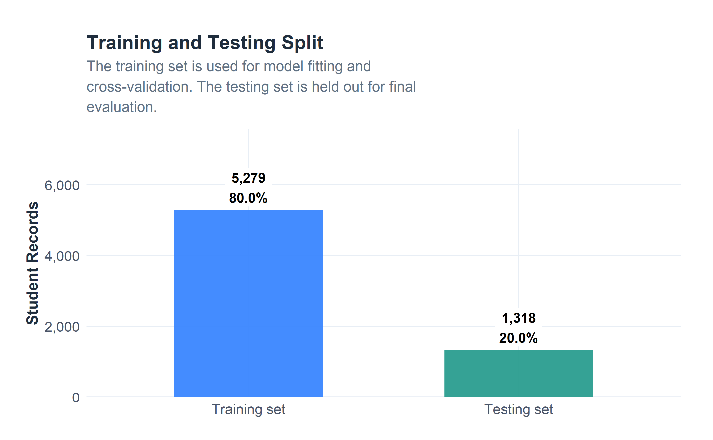
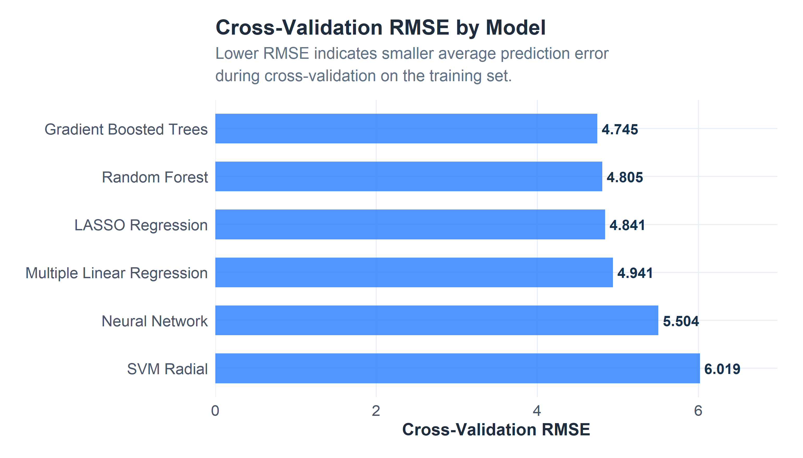
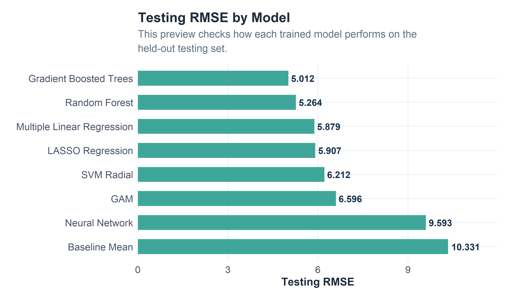
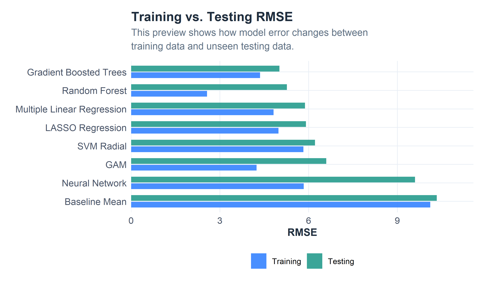

Predictive Modeling Strategy
This page builds the regression models used to predict final course grade. The workflow documents the modeling target, train/test split, preprocessing steps, model families, and saved objects used by the results page.
Page Overview
1. Modeling Goal
The primary modeling goal is to predict FinalGrade, a numeric measure of final course performance. The task is regression, and the models are evaluated using RMSE, R-squared, and MAE.
EnrollmentStatus is retained as a predictor and context variable rather than treated as the outcome. AcademicRisk is derived from FinalGrade and used later to connect predicted performance to support planning.
| Modeling_Decision | Choice | Reason |
|---|---|---|
| Primary outcome | FinalGrade | Final course performance is a numeric outcome suitable for regression. |
| Task type | Regression | The outcome is numeric. |
| Risk context | AcademicRisk derived from FinalGrade | Predicted grades can be translated into a support-review segment. |
| Enrollment status | Predictor | EnrollmentStatus provides context but is not modeled as the outcome. |
| Main comparison metric | RMSE | RMSE penalizes larger grade prediction errors. |
| Secondary metric | MAE | MAE reports the average grade-point error. |
Predict final course grade.
The model estimates final academic performance. Students with low predicted performance can be reviewed for academic support, advising, tutoring, or financial follow-up.
2. Feature Selection
The predictors are selected from the cleaned EDA dataset. The model includes academic performance, attendance, financial, enrollment, student-support, engagement, and conduct indicators.
Two versions of the model are prepared:
- Full performance model: includes FinalExamGrade.
- Early-warning model: excludes FinalExamGrade because a final exam score would usually arrive too late for early support decisions.
| Feature_Group | Variables | Reason |
|---|---|---|
| Academic context | Semester, Major, EnrollmentStatus | Course and enrollment context. |
| Student characteristics | Gender, Origin | Student context variables. |
| Academic progress | FirstPartGrade, SecondPartGrade, FinalExamGrade | Course performance components. |
| Attendance | AverageAbsences | Attendance behavior across grading periods. |
| Online learning | NumOnlineCourses | Online course load indicator. |
| Financial indicators | ScholarshipPercent, PastDueBalance | Financial support and financial pressure indicators. |
| Support services | Advisory, counseling, tutoring, formative plan sessions | Student-support usage variables. |
| Engagement/course experience | CumulativeTeacherEval | Average of teacher evaluation items. |
| Conduct | HonorFaults | Conduct-related context. |
3. Data Split and Reproducibility
The data is split into an 80% training set and a 20% testing set. The training set is used for model fitting and cross-validation. The testing set is held out for final evaluation.
| Dataset | Records | Percent |
|---|---|---|
| Full modeling dataset | 6,597 | 100.0% |
| Training set | 5,279 | 80.0% |
| Testing set | 1,318 | 20.0% |

4. Preprocessing for Modeling
The EDA page kept variables in their original units. Modeling requires additional preprocessing because categorical variables need numeric representation and some algorithms are sensitive to scale.
| Step | Applied_To | Reason |
|---|---|---|
| One-hot encoding | Categorical predictors | Many algorithms require numeric input. |
| Centering | Selected models | Keeps numeric predictors centered around zero. |
| Scaling | Selected models | Places numeric predictors on comparable scales. |
| No automatic outlier deletion | All models | Extreme values may represent meaningful cases. |
| Complete-case modeling dataset | Modeling workflow | Keeps model comparison consistent. |
| Five-fold cross-validation | Training set | Tunes hyperparameters and estimates training performance. |
| Holdout testing set | Final evaluation | Estimates performance on unseen records. |
| Item | Value |
|---|---|
| Original predictor count | 18 |
| Encoded predictor count | 53 |
| Training rows | 5279 |
| Testing rows | 1318 |
5. Baseline Model
The baseline model predicts the average FinalGrade from the training set for every student. It creates a simple comparison point for the other models.
| Model | Data | RMSE | Rsquared | MAE |
|---|---|---|---|---|
| Baseline Mean | Training | 10.111 | 0 | 6.980 |
| Baseline Mean | Testing | 10.331 | 0 | 7.055 |
Baseline Decision: The baseline does not use predictors. The trained models should improve on this reference point to justify their complexity.
Model Development
6. Multiple Linear Regression
Multiple linear regression is the first interpretable model. It is useful as a starting point because the coefficients are easy to inspect and the assumptions are straightforward.
| Model | RMSE | Rsquared | MAE |
|---|---|---|---|
| Multiple Linear Regression | 4.941 | 0.762 | 2.752 |
7. LASSO Regression
LASSO regression adds regularization to the linear model. It can shrink less useful coefficients toward zero, which helps with overfitting control.
| Model | RMSE | Rsquared | MAE | alpha | lambda |
|---|---|---|---|---|---|
| LASSO Regression | 4.8408 | 0.7697 | 2.9144 | 1 | 0.3728 |
8. Generalized Additive Model
The GAM is included because some predictor relationships may not be
strictly linear. This version uses mgcv::gam() directly to
avoid the interactive dependency issue caused by
caret::train(method = "gamSpline").
| Model | Data | RMSE | Rsquared | MAE |
|---|---|---|---|---|
| GAM | Training | 4.240 | 0.824 | 2.481 |
| GAM | Testing | 6.596 | 0.592 | 2.616 |
9. Random Forest
Random forest can capture nonlinear patterns and interactions without requiring linear assumptions.
| Model | RMSE | Rsquared | MAE | mtry | splitrule | min.node.size |
|---|---|---|---|---|---|---|
| Random Forest | 4.805 | 0.779 | 2.888 | 8 | variance | 5 |
10. Gradient Boosted Trees
Gradient boosted trees build many small trees sequentially, with each tree learning from prior errors.
| Model | RMSE | Rsquared | MAE | interaction.depth | n.trees | shrinkage | n.minobsinnode |
|---|---|---|---|---|---|---|---|
| Gradient Boosted Trees | 4.7445 | 0.7788 | 2.8291 | 3 | 200 | 0.05 | 10 |
11. Support Vector Machine
The SVM uses a radial basis function kernel. Centering and scaling are applied because SVM performance is sensitive to predictor scale.
| Model | RMSE | Rsquared | MAE | sigma | C |
|---|---|---|---|---|---|
| SVM Radial | 6.0195 | 0.676 | 3.456 | 0.005 | 1 |
13. Cross-Validation Performance Preview

14. Holdout Performance Preview
| Model | Data | RMSE | Rsquared | MAE |
|---|---|---|---|---|
| Gradient Boosted Trees | Testing | 5.012 | 0.765 | 2.826 |
| Random Forest | Testing | 5.264 | 0.740 | 2.886 |
| Multiple Linear Regression | Testing | 5.879 | 0.676 | 2.815 |
| LASSO Regression | Testing | 5.907 | 0.673 | 3.051 |
| SVM Radial | Testing | 6.212 | 0.638 | 3.386 |
| GAM | Testing | 6.596 | 0.592 | 2.616 |
| Neural Network | Testing | 9.593 | 0.138 | 4.151 |
| Baseline Mean | Testing | 10.331 | 0.000 | 7.055 |


Build Check: The results page will use these saved model objects and metrics to compare performance, inspect variable importance, and recommend a final model.
Dimensionality and Segmentation Discussion
15. PCA Discussion
Principal Component Analysis could be useful if the goal were to reduce redundancy among correlated predictors, especially the grade variables and teacher evaluation items. In this version, I use CumulativeTeacherEval to summarize the 16 teacher evaluation items because it is easier to interpret than abstract principal components.
| Question | Answer |
|---|---|
| Does PCA make sense for this dataset? | Yes. The teacher evaluation items and grade-related variables may contain correlated information. |
| Why not use PCA as the primary approach here? | The current project keeps variables easier to interpret. |
| How could PCA be used later? | Components could be created from academic and engagement predictors, then used as model inputs. |
| Main tradeoff | PCA may reduce redundancy but can make the model harder to explain. |
16. Cluster Analysis Discussion
Cluster analysis could identify groups of similar students before supervised modeling. For example, students might cluster into high-performing, attendance-risk, financial-risk, or high-support-usage groups. Those cluster labels could later be used as additional predictors or as a separate support-planning tool.
| Question | Answer |
|---|---|
| Does cluster analysis make sense for this dataset? | Yes. The dataset includes academic, attendance, financial, support-service, and engagement variables. |
| How could clusters be used? | Cluster labels could be added as predictors or used to describe student groups. |
| Why not make clustering the primary method? | The main task is supervised prediction of FinalGrade. |
| Potential future use | Create student groups such as attendance-risk, financial-risk, engagement-risk, or high-support-usage. |
Save Modeling Objects for Results Page
17. Modeling Summary
| Model | Model_Family | Strength | Limitation |
|---|---|---|---|
| Baseline Mean | Reference model | Simple comparison point | Does not use predictors |
| Multiple Linear Regression | Parametric | Fast and interpretable | Assumes mostly linear relationships |
| LASSO Regression | Regularized parametric | Feature selection and overfitting control | May underfit nonlinear patterns |
| GAM | Flexible regression | Captures smoother nonlinear patterns | Less direct to compare because it is fitted outside caret |
| Random Forest | Tree-based ensemble | Captures nonlinear patterns and interactions | Less interpretable than linear models |
| Gradient Boosted Trees | Tree-based ensemble | Strong predictive performance potential | Can overfit without careful tuning |
| SVM Radial | Kernel-based model | Flexible nonlinear modeling | Sensitive to tuning and scaling |
| Neural Network | Single-hidden-layer network | Can model complex relationships | Less interpretable and more computationally sensitive |
Model Target
FinalGrade is the numeric outcome used for model development.
Models Trained
The workflow includes linear, regularized, flexible, tree-based, kernel-based, and neural-network models.
Next Step
The results page will compare test-set performance, hyperparameters, variable importance, and model ranking.